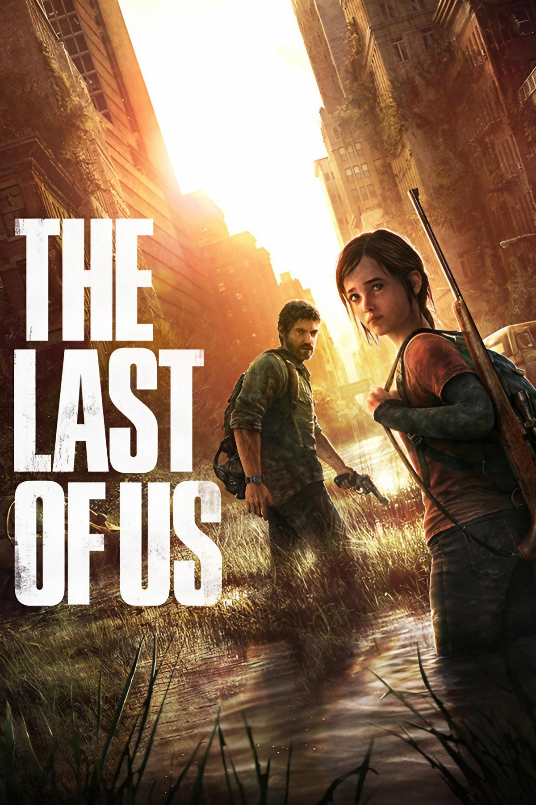
História de The Last of Us
The Last of Us é uma das franquias mais marcantes da história dos videogames, conhecida principalmente por sua narrativa, seus personagens e pela maneira como aborda temas humanos em meio a um cenário pós-apocalíptico. A franquia foi criada pela Naughty Dog, estúdio responsável por outras séries de grande sucesso, como Uncharted, e teve seu primeiro jogo lançado em 2013 para o PlayStation 3. A criação da obra foi liderada por Neil Druckmann, que atuou como diretor criativo e roteirista, ao lado de uma equipe que buscava criar uma experiência que combinasse ação, sobrevivência e uma história emocionalmente envolvente.
A ideia de The Last of Us surgiu a partir do interesse da equipe em histórias de sobrevivência e na relação entre seres humanos em situações extremas. Um dos elementos que diferencia a franquia é justamente o fato de que o apocalipse não funciona apenas como cenário para combates. O mundo destruído serve como uma forma de explorar como as pessoas mudam quando as estruturas da sociedade desaparecem. Em vez de apresentar simplesmente uma luta entre heróis e vilões, a história mostra personagens que tomam decisões difíceis e que muitas vezes possuem suas próprias razões para agir.
A história do primeiro jogo começa em 2003, quando uma infecção causada por um fungo semelhante ao Cordyceps começa a se espalhar pela população. A doença provoca alterações nos seres humanos infectados e rapidamente contribui para o colapso da sociedade. Anos depois, o mundo está completamente transformado. Cidades foram abandonadas, grupos militares controlam algumas áreas, diferentes comunidades tentam sobreviver e os infectados continuam representando uma ameaça constante.
É nesse cenário que conhecemos Joel Miller, um sobrevivente que perdeu pessoas importantes durante o início da pandemia e que passou os anos seguintes tentando sobreviver em um mundo cada vez mais violento. Sua vida muda quando recebe a tarefa de transportar Ellie, uma adolescente de 14 anos, para fora de uma zona de quarentena. Inicialmente, Joel enxerga a missão apenas como um trabalho, mas a relação entre os dois começa a mudar conforme eles atravessam diferentes regiões dos Estados Unidos.
Ellie possui uma característica que pode mudar o futuro da humanidade: ela é imune à infecção. Por isso, os Vaga-lumes, um grupo que luta contra o controle militar e procura uma forma de combater a infecção, acreditam que podem utilizar sua imunidade para desenvolver uma possível cura. A viagem de Joel e Ellie, entretanto, deixa de ser apenas uma missão de transporte. Ao longo da história, os dois enfrentam infectados, grupos de sobreviventes e situações que colocam constantemente seus valores à prova. Mais importante ainda, eles desenvolvem uma relação que se aproxima cada vez mais da relação entre pai e filha.
É justamente essa relação que está no centro de The Last of Us. O jogo utiliza o cenário pós-apocalíptico para discutir assuntos como amor, perda, luto, sobrevivência, violência, esperança e moralidade. Conforme Joel passa a enxergar Ellie como alguém de sua própria família, suas decisões deixam de ser simplesmente racionais. O final do primeiro jogo coloca essa relação diante de um dos maiores dilemas da franquia: a possibilidade de sacrificar Ellie para tentar desenvolver uma cura. Joel decide impedir que isso aconteça e posteriormente esconde de Ellie parte da verdade sobre o que ocorreu.
O sucesso do primeiro jogo foi enorme. Além de receber elogios de jogadores e da crítica especializada, The Last of Us conquistou centenas de prêmios e reconhecimentos. Entre eles estão diversos prêmios de Jogo do Ano (Game of the Year), além de premiações relacionadas à sua narrativa, direção, atuação e personagens. O título também recebeu uma versão remasterizada para PlayStation 4 e, posteriormente, um remake chamado The Last of Us Part I, lançado para PlayStation 5 em 2022 e posteriormente para PC. Essas novas versões permitiram que a obra alcançasse novas gerações de jogadores.
A história continuou em The Last of Us Part II, lançado em 2020. A sequência se passa alguns anos depois dos acontecimentos do primeiro jogo e apresenta Ellie mais velha, vivendo em uma comunidade de sobreviventes chamada Jackson. Dessa vez, a narrativa muda seu foco para temas como vingança, ódio, culpa, violência e perdão. A continuação também apresenta novos personagens e utiliza diferentes perspectivas para mostrar que conflitos não são necessariamente formados por um lado completamente certo e outro completamente errado.
The Last of Us Part II também teve uma grande repercussão na indústria e recebeu diversas premiações. No The Game Awards 2020, por exemplo, venceu categorias importantes, incluindo Jogo do Ano, além de prêmios de direção, narrativa e atuação. A quantidade de prêmios recebidos pela sequência consolidou ainda mais a franquia como uma das principais referências quando se fala em narrativa nos videogames.
Outro aspecto importante da franquia é sua adaptação para a televisão. Em 2023, a HBO lançou a série The Last of Us, produzida por Craig Mazin e Neil Druckmann. A primeira temporada adaptou principalmente os acontecimentos do primeiro jogo, enquanto as temporadas seguintes expandem a história apresentada posteriormente nos jogos. A série ajudou a apresentar o universo da franquia para um público que não necessariamente tinha contato com videogames e também recebeu reconhecimento da crítica e de premiações.
Ao longo de sua existência, The Last of Us deixou de ser apenas uma série sobre um mundo tomado por infectados. A franquia se tornou conhecida pela maneira como utiliza uma situação extrema para explorar sentimentos e decisões humanas. O apocalipse é importante para a história, mas o verdadeiro foco está nas pessoas: suas relações, seus traumas, seus erros e as consequências de suas escolhas.
Por isso, The Last of Us ocupa um lugar importante na indústria dos videogames. A franquia demonstrou que jogos eletrônicos podem utilizar narrativa, atuação, música, direção e desenvolvimento de personagens para contar histórias tão complexas e emocionais quanto outras formas de entretenimento. Mais do que apresentar um mundo destruído, a obra questiona o que resta da humanidade quando tudo ao redor deixa de existir — e até onde alguém pode chegar para proteger aquilo que ama.
Personagens
Joel Miller
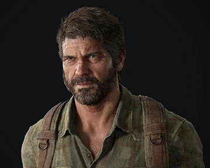
Joel Miller é o protagonista do primeiro jogo. Antes do surto, Joel era pai de uma menina chamada Sarah, e a perda dela durante o início da pandemia transforma completamente sua personalidade. Vinte anos depois, ele se tornou um sobrevivente experiente, desconfiado e disposto a fazer coisas difíceis para continuar vivo. Joel inicialmente trata Ellie apenas como uma responsabilidade, mas, conforme os dois viajam juntos, começa a desenvolver por ela um sentimento semelhante ao que tinha por sua própria filha. Essa relação é fundamental para entender suas decisões durante a história.
Ellie Williams
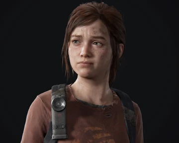
Ellie Williams é uma das personagens centrais da franquia. Com 14 anos no primeiro jogo, Ellie cresceu praticamente dentro do mundo pós-apocalíptico e possui uma personalidade bastante diferente da de Joel. Ela é curiosa, corajosa, sarcástica e demonstra grande interesse pelo mundo que existia antes da pandemia. Sua principal característica é sua imunidade ao Cordyceps, algo que faz com que os Vaga-lumes a considerem extremamente importante para a busca por uma possível cura. Entretanto, Ellie não é apenas importante por sua imunidade: sua relação com Joel é o coração da narrativa.
Tess Servopoulos
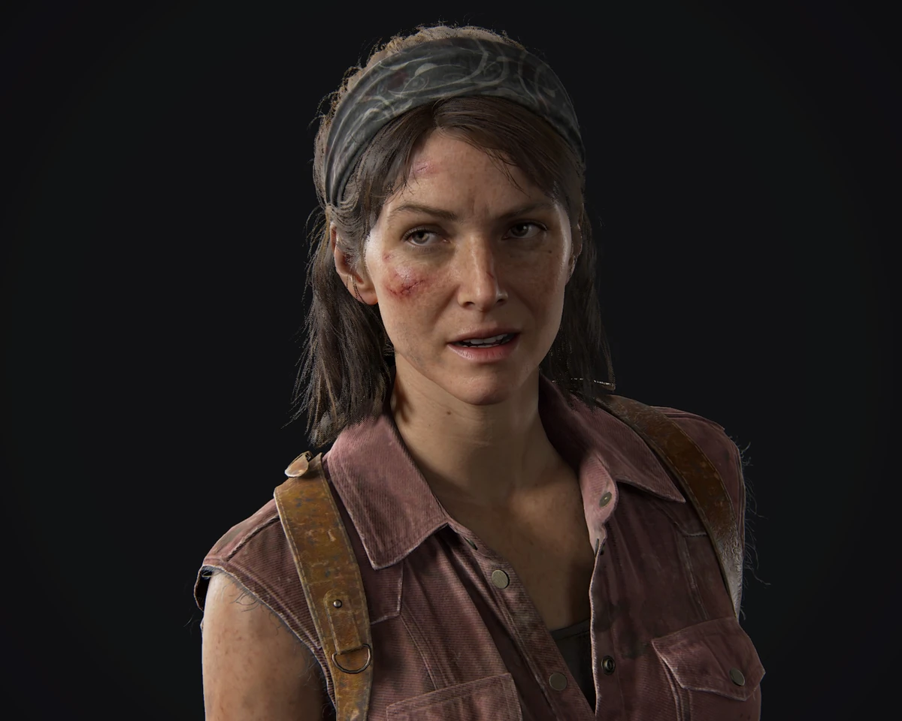
Tess Servopoulos é uma parceira de Joel no início da história. Os dois trabalham juntos como contrabandistas na zona de quarentena de Boston e possuem uma relação de confiança construída ao longo dos anos. Tess é determinada, prática e experiente, sendo uma das poucas pessoas capazes de acompanhar Joel em situações perigosas. Ela também possui um papel importante na decisão de Joel de levar Ellie até os Vaga-lumes.
Marlene
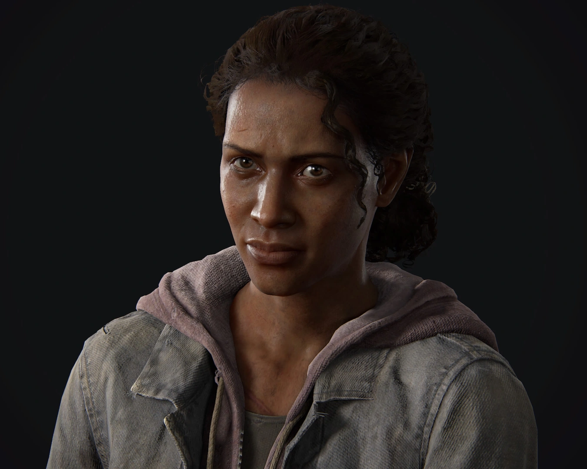
Marlene é a líder dos Vaga-lumes em Boston. Ela conhece Ellie há anos e sabe da importância de sua imunidade. Marlene representa o lado do conflito que acredita que o sacrifício de uma pessoa pode ser necessário para tentar salvar milhões. Por isso, sua relação com Joel se torna cada vez mais complicada conforme ele descobre o verdadeiro objetivo dos Vaga-lumes.
Tommy Miller
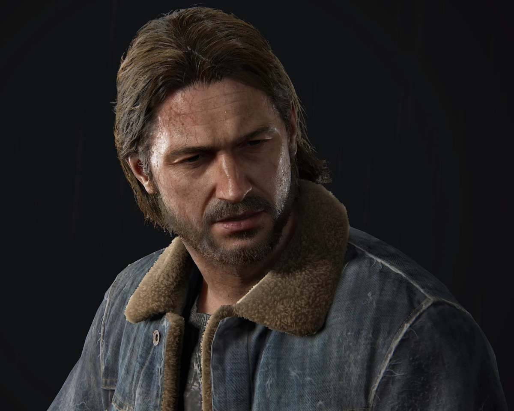
Tommy Miller é o irmão mais novo de Joel. Diferentemente de Joel, Tommy tenta manter uma visão mais esperançosa sobre a humanidade mesmo depois do colapso da sociedade. Ele vive em uma comunidade organizada de sobreviventes e ajuda a mostrar que ainda é possível construir uma vida relativamente normal naquele mundo. Sua relação com Joel também permite compreender melhor o passado e a personalidade do protagonista.
Sarah Miller
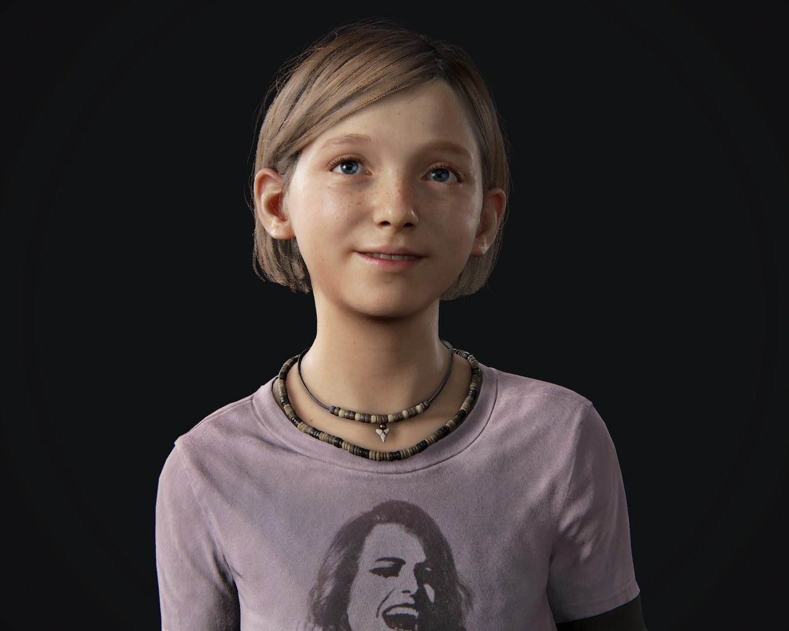
Sarah Miller aparece principalmente no início do jogo e é extremamente importante para compreender Joel. Ela é sua filha e possui uma relação muito próxima com ele. Os acontecimentos envolvendo Sarah durante o início da pandemia são responsáveis por marcar profundamente Joel e influenciar suas atitudes durante toda a história. Mesmo aparecendo por pouco tempo, sua presença possui um impacto enorme na narrativa.
Bill
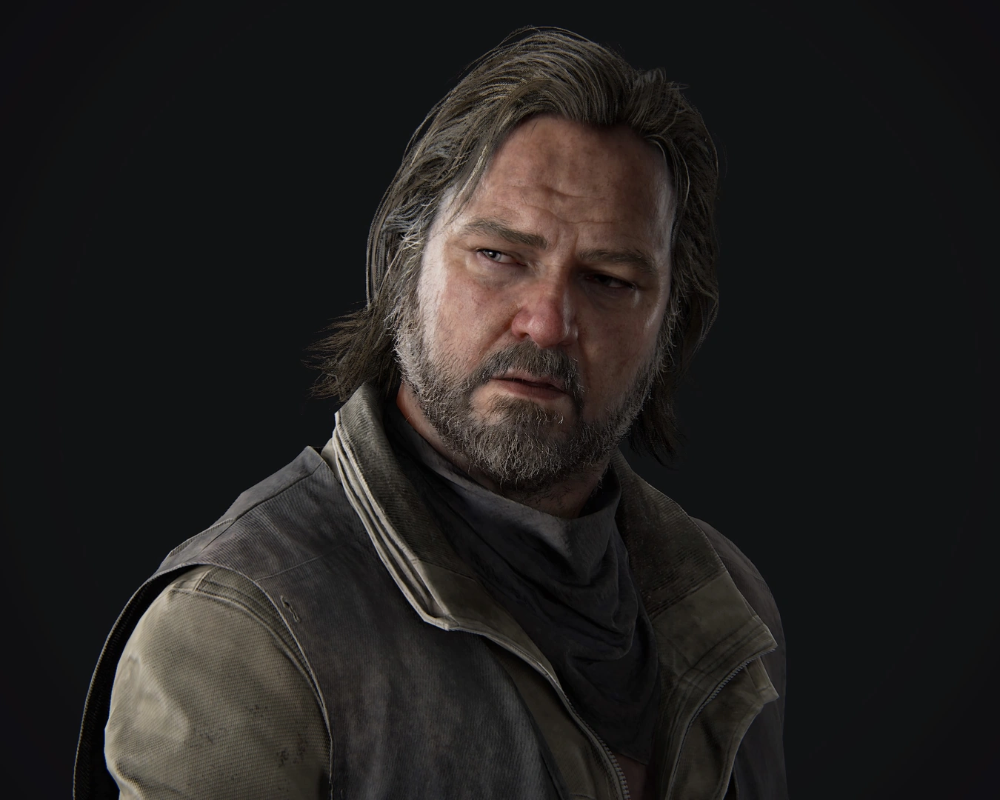
Bill é um sobrevivente que vive isolado em uma pequena cidade. Extremamente desconfiado de outras pessoas, ele construiu uma série de mecanismos para proteger seu território contra invasores e infectados. Apesar de sua personalidade difícil, Bill ajuda Joel e Ellie em determinado momento da jornada. Sua história também mostra uma das consequências da vida naquele mundo: o isolamento e a dificuldade de confiar novamente em outras pessoas.
Henry e Sam
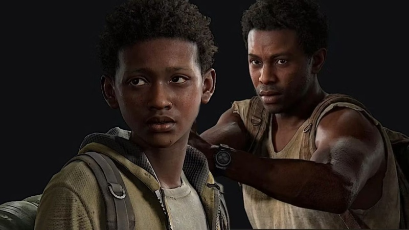
Henry e Sam são dois irmãos que Joel e Ellie encontram durante a viagem. Henry é responsável por proteger Sam e demonstra preocupação constante com o irmão mais novo. Sam, por sua vez, é uma criança que, apesar de viver em um mundo extremamente perigoso, ainda mantém características de alguém de sua idade. A relação entre os dois irmãos cria um paralelo com a relação entre Joel e Ellie e reforça um dos principais temas do jogo: até onde alguém está disposto a ir para proteger uma pessoa importante.
Capítulos Principais
Prólogo
O prólogo de The Last of Us mostra o início da infecção e apresenta Joel antes do colapso da sociedade. Ele vive no Texas com sua filha, Sarah, até que uma infecção começa a se espalhar rapidamente e transforma a cidade em um cenário de caos. Durante a tentativa de fuga ao lado de Sarah e de seu irmão Tommy, Joel sofre uma perda que muda completamente sua vida. Vinte anos depois, ele se tornou um sobrevivente frio, desconfiado e acostumado a um mundo dominado pela violência e pela escassez.
Verão
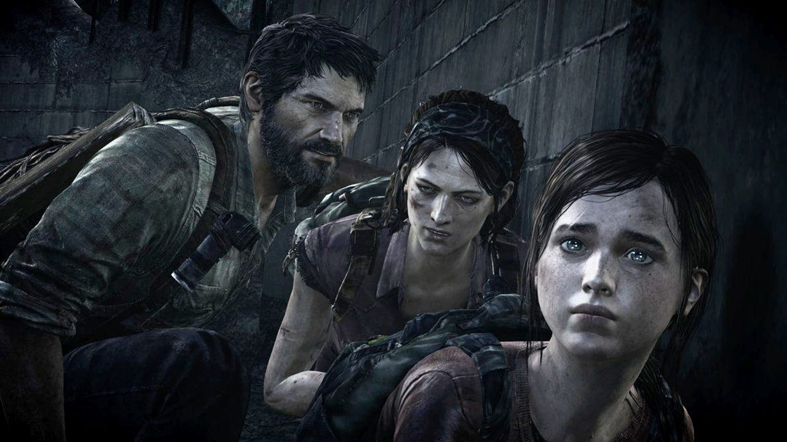
No verão, Joel vive na zona de quarentena de Boston e trabalha como contrabandista ao lado de Tess. Os dois recebem a missão de levar Ellie até os Vaga-lumes e logo descobrem que ela possui uma característica rara: aparentemente é imune à infecção. A partir daí, Joel e Ellie iniciam uma longa viagem pelos Estados Unidos, enfrentando infectados e grupos hostis. Durante o caminho, encontram personagens como Bill, Henry e Sam. No começo, Joel mantém distância emocional de Ellie, mas aos poucos os dois começam a confiar um no outro e criam uma relação cada vez mais próxima.
Outono
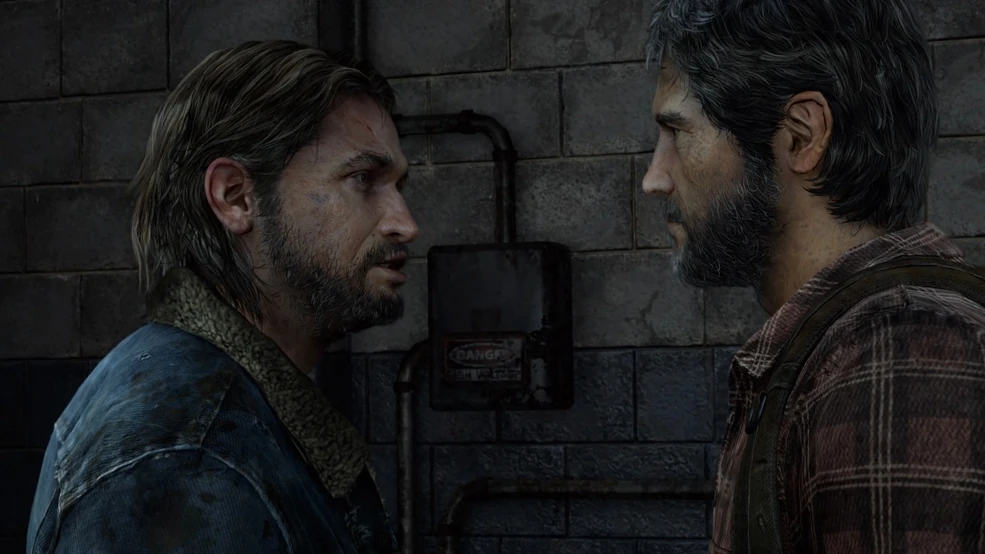
Durante o outono, Joel e Ellie chegam ao Wyoming em busca de Tommy, irmão de Joel. Ele vive em uma comunidade organizada ao lado de sua esposa, Maria, onde os sobreviventes tentam reconstruir uma vida mais segura. Joel considera deixar Ellie com Tommy, mas percebe que já criou um forte vínculo com ela. Depois disso, decide continuar a viagem pessoalmente. Os dois seguem até uma universidade em busca dos Vaga-lumes, mas descobrem que o grupo já deixou o local.
Inverno
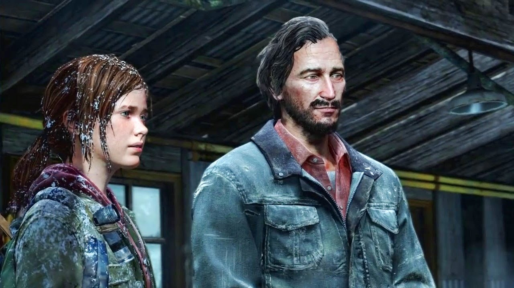
No inverno, Joel fica temporariamente incapaz de continuar a viagem, fazendo com que Ellie precise assumir uma responsabilidade maior pela sobrevivência dos dois. Durante esse período, ela conhece David, líder de um grupo de sobreviventes que inicialmente parece disposto a ajudá-la. Com o tempo, Ellie percebe que está em perigo e precisa confiar em sua própria coragem e inteligência para sobreviver. Essa parte da história mostra seu amadurecimento e também reforça o quanto Joel passou a se importar com ela.
Primavera
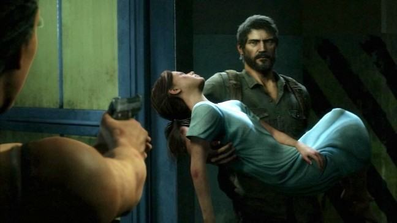
Na primavera, Joel e Ellie finalmente chegam a Salt Lake City e encontram os Vaga-lumes. Os médicos acreditam que a imunidade de Ellie pode ajudar nas pesquisas para uma possível cura, mas o procedimento colocaria sua vida em risco. Joel se recusa a perdê-la e decide impedir que a operação aconteça. Esse momento representa o principal dilema moral da história, colocando em conflito a possibilidade de ajudar a humanidade e o desejo de proteger alguém que ele passou a considerar como uma filha.
Epílogo
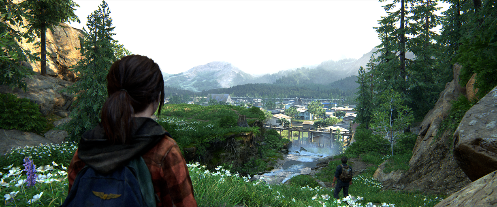
No epílogo, Joel e Ellie seguem em direção à comunidade de Tommy. Ellie, porém, ainda possui dúvidas sobre o que realmente aconteceu com os Vaga-lumes. Joel conta uma versão diferente dos acontecimentos e garante que está dizendo a verdade. Ellie aceita sua resposta, mas o momento deixa uma dúvida importante entre os dois. O final reforça um dos principais temas de The Last of Us: até onde alguém pode chegar para proteger uma pessoa que ama.
Deixe sua opinião sobre o jogo
Agora queremos saber a sua opinião sobre The Last of Us. Conte o que você achou do jogo e da história.